Bánh xèo Bà Hai
Bánh xèo là món ăn quen thuộc của người Việt Nam. Hầu như miền nào cũng có bánh xèo, tuy nhiên mỗi miền có cách chế biến đặc trưng khác nhau. Trong số đó, bánh xèo miền Tây được xem là món ăn đặc sắc mang đậm cái hồn của quê hương. Từ nguyên liệu đến cách chế biến đều toát lên mùi "sông nước thân thương, bình dị".
Để thưởng thức được món bánh xèo đậm sắc miền Tây thì chúng ta không thể nào bỏ lỡ "bánh xèo Bà Hai" và cùng với không gian xanh mát, rộng rãi. Chắc hẳn, Khi ai đã từng nếm qua món bánh xèo thì sẽ không bao giờ có bất kì điều gì không hài lòng về chất lượng bánh xèo, đặc biệt là nước chấm "cực kì ngon" không nơi nào có.
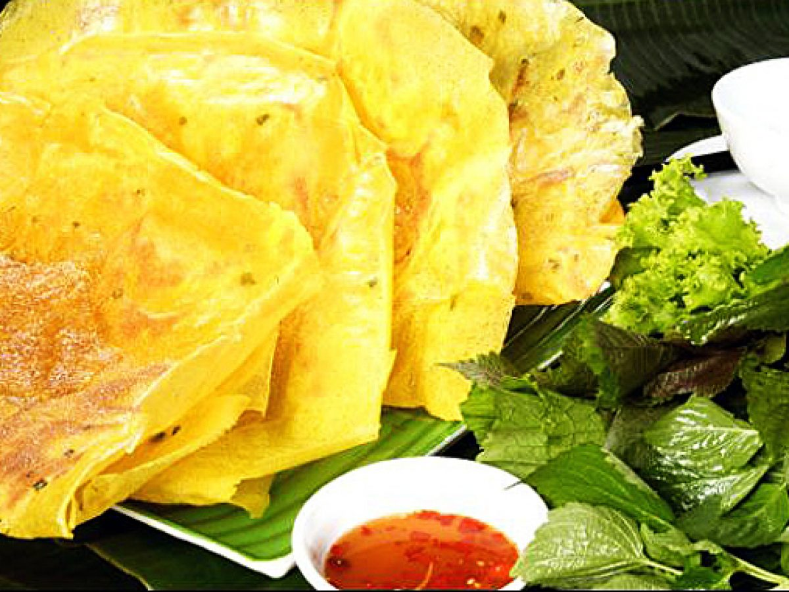
Bánh Xèo Bà Hai – hệ thống bánh xèo nổi tiếng đậm chất Nam Bộ là một trong những địa chỉ đã chinh phục biết bao vị khách Sài Thành đam mê ẩm thực. Không chỉ có bánh xèo, đến với hệ thống nhà hàng Bánh Xèo Bà Hai, thực khách còn có cơ hội thỏa mãn niềm đam mê ẩm thực với nhiều món ngon dân dã thơm ngon khác chả giò, gỏi cuốn , bún thịt nướng.
Bánh Xèo Bà Hai mang một nét rất riêng, gồm 12 loại bánh xèo chay mặn khác nhau để bạn chọn lựa. Bánh mỏng, giòn rụm, và đặc biệt là ít dầu mỡ. Trên những chiếc bánh, từng hạt đậu xanh vàng mịn, từng con tôm tươi ngon, từng cọng giá trắng tinh, từng cọng hành xanh mướt... tất cả quyện lại tạo thành một chiếc bánh hoàn hảo, ngọt dịu từ nhân bánh thấm đều vỏ bánh.
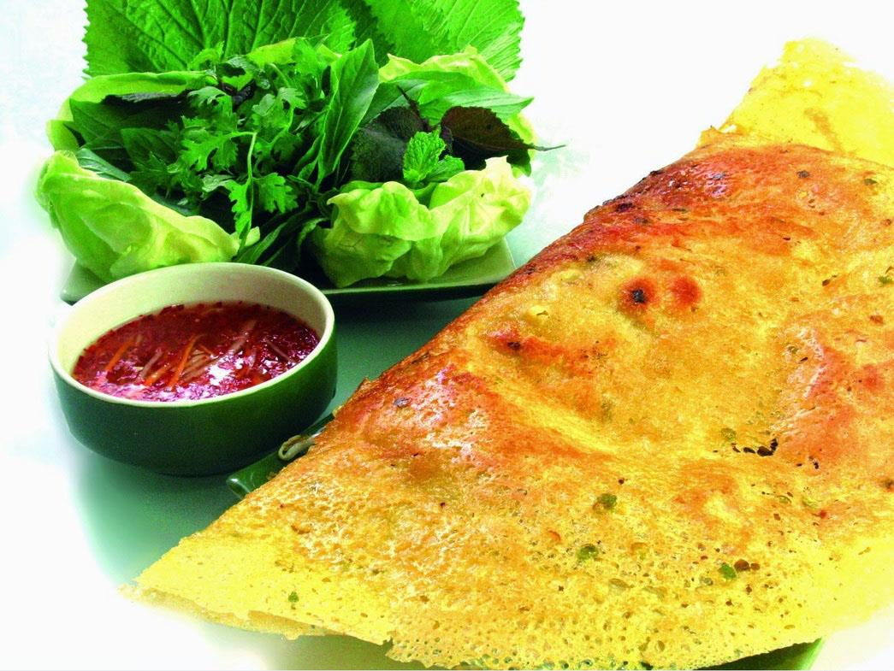
Nguyễn Vũ Khang (thành viên Cat Hunters Food): "Tôi đã từng cùng với gia đình đã có dịp thưởng thức tại quán Bánh Xèo Bà Hai, tại đây tôi được thưởng thức món bánh xèo rất tuyệt vời, từng miếng bánh quấn trong trong bánh tráng và rau xanh tươi cùng với những loại rau rừng thiên nhiên mang một vị thuốc, chấm với nước mắm rất riêng của Bà Hai sẽ cho bạn một trải nghiệm mới lạ, khiến bạn không thể quên được món ăn truyền thống này".
Địa chỉ: 512 Nguyễn Kiệm , Phường 4, Quận Phú Nhuận , TPHCM
Nem nướng Thanh Vân
Quán nem nướng Thanh Vân khá nổi tiếng ỡ Cần Thơ, tuy tại Cần Thơ, được biết đến không chỉ ngon về món ăn, mà còn về nhân viên phục vụ rất nhiệt tình và thân thiện. Thực đơn của quán gồm có chả giò chiên, và bún nem nướng, với chả giò chiên thì sẽ 6k/ cuốn, còn bún nem nướng thì có hai mức giá là 35k và 50k. Điều đặc biệt ỡ đây là quán rất đông vào buổi tối cuối tuần, vì vậy nếu như mọi người muốn thưởng thức vào giờ đó thì có thể gọi điện để nhờ họ giữ chỗ cho chúng ta.
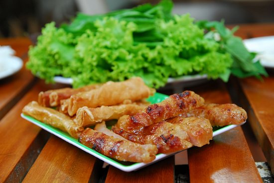
Nem nướng không chỉ ỡ miền Nam, mà nó có mặt ỡ 3 miền, mỗi miền mang hương vị khác nhau.Không có màu vàng khô của nem rán, nem chua nướng vẫn giữ nguyên màu hồng tươi của thịt cùng với hương thơm thoang thoảng hấp dẫn thực khách.
Có rất nhiều thương hiệu nem nướng nổi tiếng như: nem chua nướng Hà Nội, nem lụi Huế, nem nướng Nha Trang hay nem nướng miền Tây... Mỗi nơi có một cách chế biến và hương vị khác nhau.
Độc đáo nem chua nướng Hà Nội
Trong cái se lạnh của trời thu Hà Nội, được quây quần bên những chiếc bàn, vừa rôm rả trò chuyện vừa thưởng thức những que nem nướng bốc khói thì khá thú vị. Ở Hà Nội, nem chua nướng được bán nhiều trên các con phố, nhưng địa điểm ngon và thu hút nhiều thực khách nhất là phố Ấu Triệu. Đây được coi là nơi ra đời của món nem chua nướng thơm ngon này. Người ta kể lại rằng, vào một buổi tối mùa đông cách đây khoảng 20 năm, một cậu bé tiểu học trên đường đi học về ngang qua quán cóc trên phố Ấu Triệu của cụ bà bán khoai, xin nướng nhờ cây nem chua ăn cho đỡ lạnh. Không ngờ, khi nướng chín, nem rán vàng cùng hương thơm thoang thoảng, khi ăn hơi dai, bùi rất ngon miệng. Từ đó món nem chua nướng hình thành. Không biết độ chính xác trong câu chuyện này là bao nhiêu phần trăm, nhưng sự thật là nem chua nướng đã trở thành món ăn đặc sản của người Hà Nội.

Màu hồng nhạt của nem chua nướng cùng lớp keo cháy xém bên ngoài tỏa mùi thơm nức rất hấp dẫn. Ảnh: T.G
Không giống nem chua rán vốn khô và có màu vàng ruộm, nem chua nướng vẫn giữ nguyên được màu hồng tươi của thịt cùng với một chất keo dinh dính bao bọc bên ngoài. Những chiếc nem được đặt trên vỉ than hồng, trở đều tay sao cho lá ổi bọc bên ngoài cháy sém, hương thơm dịu nhẹ tỏa ra là dùng được. Ăn kèm với nem chua nướng là tương ớt. Mùi thơm cùng miếng nem nướng như hòa quyện và tan ra khi đưa lên miệng. Cái bùi bùi hơi ngọt của nem cùng vị cay nồng của tương ớt làm cho bạn cảm thấy thật ấm áp trong cái se lạnh của trời Hà Nội. Để đỡ ngấy, nem nướng được ăn kèm với đồ chua như xoài, dưa chuột, đu đủ...
Phong phú nem nướng miền Trung
Nem nướng là món ăn rất phổ biến ở miền Trung và Tây Nguyên, hầu như tỉnh nào cũng có. Trong đó, nổi tiếng nhất là nem lụi Huế, nem nướng Nha Trang và nem nướng Đà Lạt... Thành phần chính của món ăn là nem, được làm từ thịt lợn tươi vừa mới mổ xong. Thịt được rửa sạch, xay nhuyễn rồi nêm gia vị vừa ăn, vo thành từng viên dài quanh que tre nhỏ và nướng chín trên bếp than hồng.

Nem nướng rất phổ biến ở miền Trung như: nem nướng Đà Lạt, nem lụi Huế hay nem nướng Nha Trang... Ảnh: Khánh Hòa.
Thành phần thứ hai quan trọng không kém là đĩa rau sống với các nguyên liệu đặc trưng của món ăn như: chuối chát, khế, hẹ, xà lách, ngò gai, tía tô, húng thơm. Một điểm không thể thiếu làm nên gia vị cho món ăn là đồ chua, như: cà rốt, củ cải, dưa leo, hành tím. Không thể thiếu chén nước chấm sền sệt, có màu vàng, còn được gọi là nước lèo (theo cách gọi của người miền Trung), làm từ bột, nước, đậu phộng giã nhuyễn, vừng rang và nêm gia vị vừa ăn.
Người miền Trung ăn nem nướng như món gỏi cuốn của người Sài Gòn, dùng một lát bánh tráng mỏng, cho lên trên một lát xà lách, chuối chát, khế, đồ chua, lát nem nướng và vài miếng bánh tráng ngọt chiên giòn, cuộn tròn lại chấm vào nước chấm.
Nem nướng miền Trung là sự tổng hòa của các hương vị: vị chua của khế, chát của chuối, cái chua ngọt của đồ chua, cay của ớt, nem nướng thơm ngon cùng vị béo của nước chấm, tất cả hòa quyện vào nhau làm nên một món ăn đậm đà không thể quên.
Nem nướng miền Tây
Khác với nem chua nướng của Hà Nội hay nem nướng của miền Trung, nem nướng của người miền Tây có vị ngọt và đậm đà hơn. Nem cũng được làm từ thịt lợn quết nhuyễn với hành, tỏi cùng các loại gia vị khác cho vừa ăn.

Không có vị chua của nem nướng Hà Nội hay vị cay của nem nướng miền Trung, nem nướng miền Tây có vị ngọt rất đặc trưng. Ảnh: Khánh Hòa.
Nem được vo dài dọc theo thanh tre và nướng chín vàng trên bếp than hồng. Có rất nhiều loại nước chấm ăn khi thưởng thức món ngon này, nhưng đặc trưng và nổi tiếng nhất là nước chấm được làm từ tương ngọt nấu chín với nước me chua để tạo thành nước chấm đậm đà.
Xà lách, tía tô, húng thơm, dưa chuột, khế... là các loại rau đặc trưng khi ăn nem nướng. Dùng bánh tráng lót phía dưới, cho rau sống, chuối, dưa chuột, dứa lát mỏng, sau đó tách nửa phần nem đã nướng vàng thơm, cuốn tròn lại chấm vào chén tương có một ít lạc rang vàng, ớt băm hơi cay. Khi ăn miếng nem đầu tiên bạn sẽ cảm nhận được ngay vị đậm đà của nem hòa quyện với mùi thơm của tỏi, chút cay của ớt, vị mát thanh của rau xanh và đặc biệt là hương vị đậm đà của nước chấm làm nên đặc trưng rất riêng cho món ăn rặt đất miền Tây này.
Vịt nấu chao Thành Giao
Vịt nấu chao là một món đặc sản ở Cần Thơ, trong đó, quán Lẩu vịt nấu chao Thành Giao là địa chỉ nổi tiếng với du khách khi du lịch Cần Thơ.
Đây là món ăn quá quen thuộc ở Cần Thơ nên có nhiều hàng quán bán món này. Nhưng với cách chế biến đặc biệt của quán Thành Giao, nhiều người rất yêu thích món lẩu vịt nấu chao ở đây.
Bên cạnh đó, thực khách không chỉ được ngồi trong một không gian thoáng đãng, dân dã nhưng gần gũi, mà còn được thưởng thức những món ngon tươi, sạch bên cạnh thái độ phục vụ nhiệt tình, thân thiện của đội ngũ nhân viên Thành Giao.
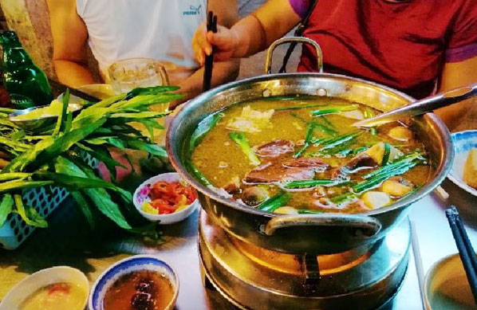
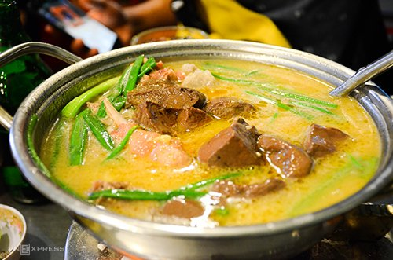
Chủ quán là Nghệ nhân Thành Giao với tay nghề lâu năm, dày dặn kinh nghiệm luôn mang đến cho khách món lẩu vịt nấu chao với hương vị đặc biệt nhất. Quán lẩu vịt nấu chao Thành Giao là nơi dừng chân của nhiều nghệ sĩ nổi tiếng như Minh Nhí, Hồng Vân, Hoài Linh, Bảo Chung, Việt Hương, Việt Trinh, Cát Trường, Đàm Vĩnh Hưng, Trấn Thành, Kim Tử Long, Nam Cường, Kiều Minh Tuấn, Cát Phượng, Thu Trang, Tiến Luật Sơn Tùng MTP… mỗi khi về các tỉnh thành miền Tây biểu diễn.
Địa chỉ: hẻm 1, số 1/8 đường Lý Tự Trọng, phường An Phú, quận Ninh Kiều, thành phố Cần Thơ.
Quán Hồi Đó
Khi chúng tôi viết một bài review về quán này, chắc hẳn các bạn sẽ thắc mắc tại sao chúng tôi lại chọn quán này, mà sao không chọn những quán khác có phong cách hiện đại hợp với giới trẻ hơn và để cho những thắc mắc ấy biến mất thì các bạn hãy theo chúng tôi khám phá thông qua bài viết này nhé ( gợi ý một chút xíu đó là "..abcxyz..:33" ) .
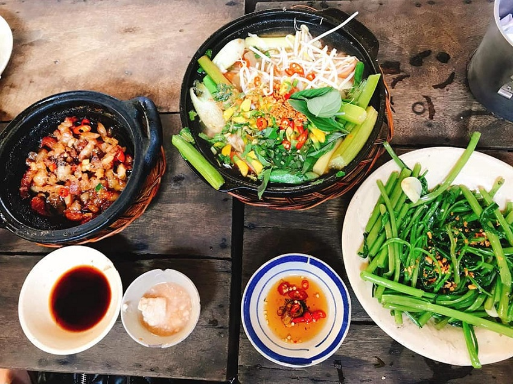
Khi Chúng tôi lần đầu đến, một số khoảnh khắc lần đầu đó đã "đập" vào mắt Chúng tôi, khoảnh khắc "đầu tiên" là quán rất là đông,may mắn thay là quán còn đúng duy nhất 1 bàn 6 ghế đủ cho 6 người chúng tôi, tiếp theo là không gian của quán, chúng ta có thể cảm nhận cơn gió nhè nhẹ tự nhiên vút qua, những tiếng chim ríu rít và thật sự cách bố trí của quán rất giống với những ngôi nhà ỡ những thập niên 8x được xuất hiện trong những bộ phim tài liệu xưa về những năm Đất Nước ta còn đang bị đô hộ.
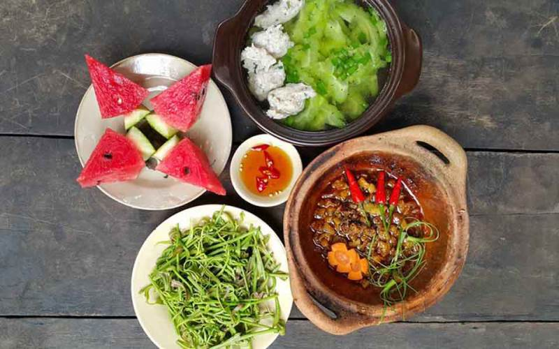
Khoảnh khắc "thứ hai" tôi cá là các bạn cũng sẽ đoán được ngay, và đó chính là thực đơn của quán, trong thực đơn của quán có những món từ " thời xưa" đến "thời nay" vì thế các bạn không cần quan tâm đến giá cả đâu, vì giá các món ăn ỡ đây rất là hợp với túi tiền của đại đa số. Và cũng vì như thế nên nơi này được chúng tôi ví như là nơi hoài niệm vậy, hoài niệm về tình yêu đôi lứa... nói đùa thôi chứ nơi đây là nơi mà nhóm của chúng tôi đã lần đầu hẹn nhau đi ăn trưa cùng, một buổi trưa đầy vui vẻ và thú vị.
Địa chỉ: 54 Trần Bình Trọng-Phường An Phú-Quận Ninh Kiều · Cần Thơ
Bánh cống cô Út
Giữa bao nhiêu thứ đặc sản của vùng đất Cần Thơ, ai đã nếm bánh cống một lần đều khó có thể quên được cái tan giòn của vỏ bánh vàng ươm, vị ngọt đậm đà và béo ngậy được cân bằng lại rất khéo bởi cái tài tình của bát nước chấm với đủ loại rau ăn tươi ngon kèm này. Bánh cống đã trở thành món ăn vặt yêu thích của người dân địa phương cũng như du khách gần xa.
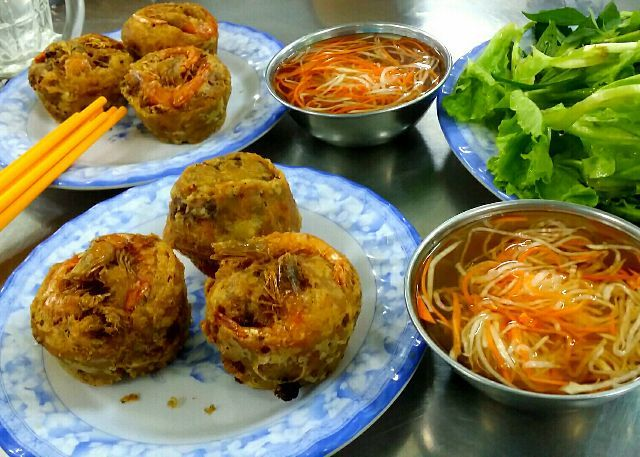
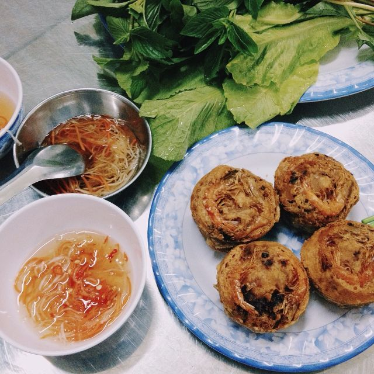
Từng phần nước chấm cho đến các thức rau ăn kèm đều do cô Út để nhiều tâm huyết vào. Vì vậy, sẽ khó mà thưởng thức được hương vị tương tự nếu bạn đến những nơi khác. Một chiếc bánh có giá 11.000 ăn tầm 2,3 cái là mình thấy no căng bụng rồi. Bên cạnh còn có thể ăn kèm với bún! Tại ngon quá nên cứ muốn ăn thêm chứ bánh to và nhiều lắm.
Địa chỉ: 38 Lý Tự Trọng, phường Tân An, quận Ninh Kiều, thành phố Cần Thơ
Gia Hảo the dimsum
Là những người làm bếp đầy tâm huyết và những người làm dịch vụ đầy đam mê , GIA HẢO the dimsum luôn kỳ vọng từng khách hàng luôn cảm nhận niềm hân hoan khi cùng nhau dùng bữa.
4 MÓN #CƠM #QUẢNG_ĐÔNG VẠN NGƯỜI #PHẢI_LÒNG 🌿 Giá chỉ từ 23.000 đồng Mỗi ngày bạn vẫn đang bận tâm cho việc tìm kiếm một bữa ăn hoàn hảo , thì GIA HẢO luôn ở ngay đây và sẵn chờ bạn thưởng thức. Mỗi món cơm là một niềm thăng hoa , nhiệt tâm và đầy xúc cảm. 🍛 CƠM SƯỜN XÀO CHUA NGỌT hay CƠM CHIÊN TỨ HỶ ?! 🍽️ CƠM THỊT XÁ XÍU hay bạn thích ăn CƠM GÀ ?! Bằng công thức riêng biệt , đậm vị Quảng Đông , từng bữa ăn đã làm cho biết bao người phải lòng , rung động. Ngay bây giờ , ĐÃ ĐẾN LƯỢT BẠN VÀ NGƯỜI THÂN THƯỞNG NGHIỆM !!

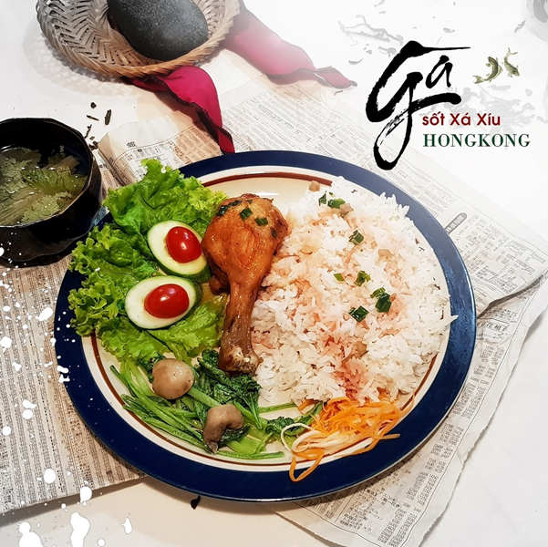
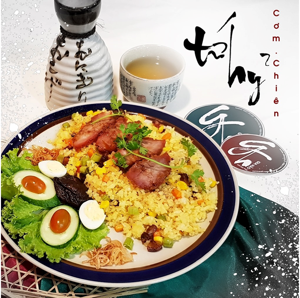
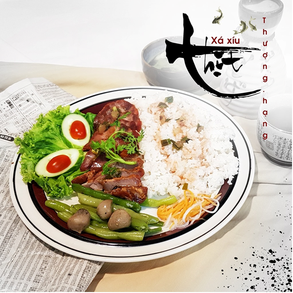
VÌ SAO #MỲ_HOA_THƯƠNG CỦA #GIA_HẢO LẠI ĐƯỢC ƯU CHUỘNG ?! 🍜 Hương vị mỳ GIA đã và đang được nhiều người biết đến và khen ngợi. Nguyên nhân vì sao những món Mỳ truyền thống Hoa thương này lại có sức hút như vậy ?! Với công thức gia truyền GIA HẢO tự hào sở hữu nước soup có hương vị đặc trưng khác biệt. Bằng xương và rau củ hầm trong nhiều giờ liền, chúng tôi cho ra : 💧 #Nước_mỳ thanh đạm có vị ngọt tự nhiên, thơm ngon khó cưỡng. 🥢 #Sợi_mỳ độc quyền, dày dặn, thơm dai – có sức mạnh lạ kỳ làm hài lòng mọi khẩu vị. 🥩 #Nguyên_liệu từ rau củ cao cấp đến thịt và hải sản thượng hạng. _________ ❝ Vượt qua khỏi giới hạn của việc trao trả - bán buôn , chúng tôi ý thức rằng món mình làm ra không đơn thuần là sản phẩm mà đó là sự #gìn_giữ. Vượt qua khỏi giới hạn của việc đón nhận – thu mua , chúng tôi quan niệm rằng sự lựa chọn món #truyền_thống của khách hàng là #giá_trị thiêng liêng, trân quý. ❞
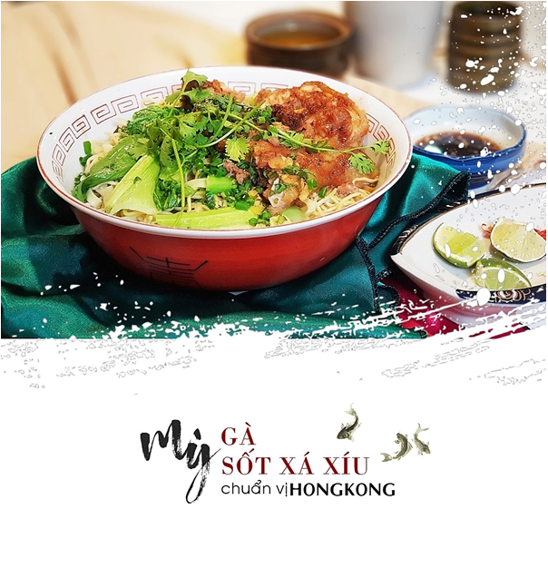
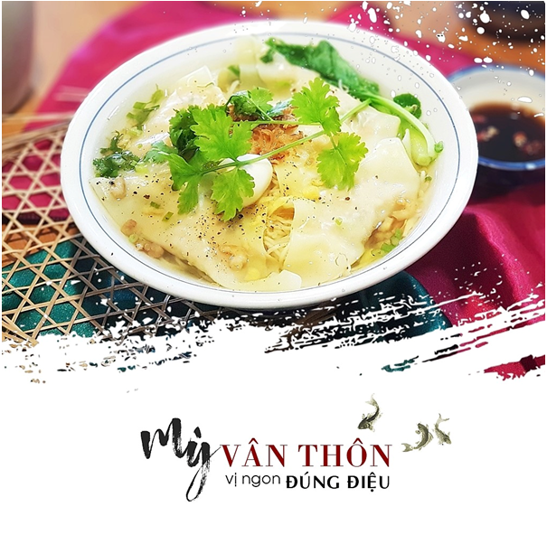
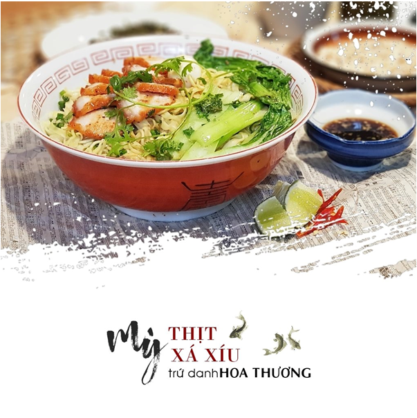
❝ Tôi vẫn còn nhớ những ngày nhỏ , Bà dì Đạm thường dắt tôi đi chợ . Ngang qua những hàng bán thịt , sắc đỏ óng ả thơm lừng thịt vịt quay , hương thơm ngũ vị từ thịt xá xíu , . . . Giờ ngồi nhớ lại , hình ảnh ký ức hệt như những chén nước sốt dậy trào , đầy quyến rũ và thực cùng hấp dẫn . . . ❞ 🥓 Xá xíu – có chữ Hán là #叉燒, âm Hán Việt đọc Xoa Thiêu - là một loại thịt heo quay hoặc nướng , xuất phát từ Quảng Đông, Trung Hoa . Theo nghĩa đen , xoa thiêu là "đốt/nướng xâu" . Món này vốn bắt nguồn từ cách lấy thịt heo , lạng bỏ xương , ướp gia vị , xỏ ghim rồi đem nướng trên lửa. Thịt thường dùng là thịt vai , nếu muốn ngon hơn phải chọn thịt ba chỉ .
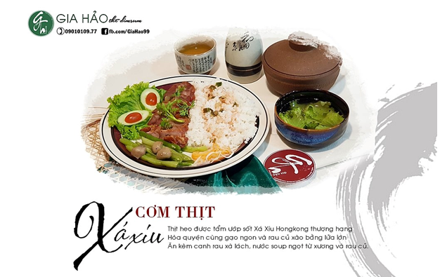
Một chút hương thơm ngũ vị
Một chút hương thơm mật ong
Dậy mùi tương đen
Cái nhẹ nồng từ Mai Quế Lộ
Và cái tan chảy “khó cưỡng” từ mạch nha
. . . Cả thảy làm cho thịt Xá xíu có sắc đỏ hoàn hảo cùng vị ngon khó nhầm lẫn .
🌾 Gạo ngon , kết hợp cùng rau củ xào trên lửa lớn . . .
Ăn kèm canh rau xà lách , nước soup hầm nhiều giờ liền từ xương và rau củ
Mọi thứ không chỉ cho ra món ngon gọi là Cực phẩm – mà đó là bí huyết , thăng hoa và danh tiếng . . .
Thật thà , “món cơm truyền thống” này sinh ra dành riêng cho Quý vị ?! Hãy đến và thưởng thức , vì Quý vị xứng đáng được hưởng giá trị đậm chất Quảng Đông mỗi ngày .
Địa chỉ: 95 Trần Văn Hoài, Xuân Khánh, Ninh Kiều, Cần Thơ
Sủi cảo A Chảy
Đến với Cần Thơ khi bạn muốn thưởng thức sủi cảo hãy thử 1 lần ghé thăm Sủi Cảo A Chảy chắc hẳn là không còn gì xa lạ với người dân Cần Thơ, đặc biệt là giới học sinh- sinh viên.
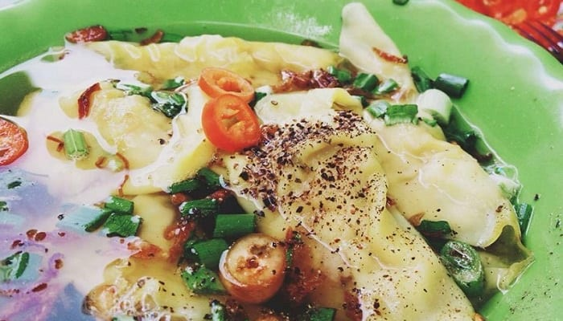
Sủi cảo A Chảy có bán sủi cảo các loại, súp cua, hoành thánh. Hoành thánh nhiều nhân, nấu không bị nát. Nước dung ngọt thanh trong vắt, ăn kèm với rất nhiều rau cải.
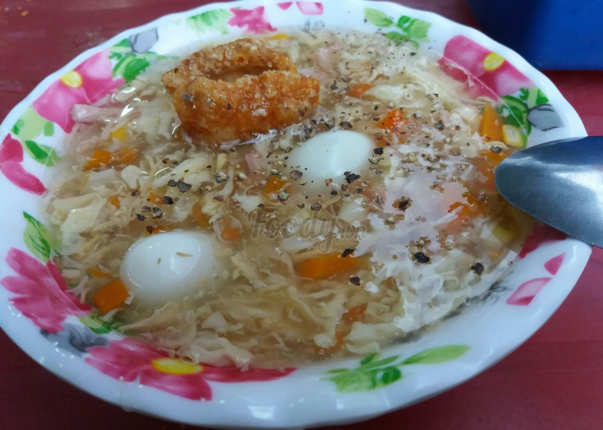
Nói đến súp cua của A Chảy thì nó rất được ưa chuộng tại Cần Thơ. Được ưa chuộng là bởi vì súp cua luôn đảm bảo nóng và vị nêm đậm đà. Những bát súp nghi ngút khói thất sự kích thích thị giác và vị giác của những thực khách nơi đây.
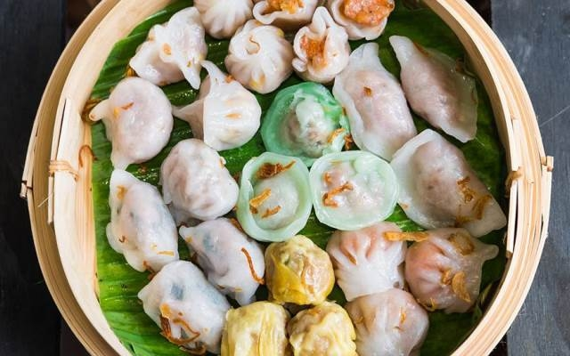
Nhưng ngon nhất và được biết tới nhiều nhất ở đây vẫn là sủi cảo. Sủi cảo nhân tôm thịt rất tươi, nước súp vừa ăn, và vẫn là cải ngọt ăn kèm không ngán. Bạn có thể gọi sủi cảo ăn không, hoặc ăn chung với mì. Quán khá bé, và thường đông nhưng phục vụ nhanh, giá cả lại rất hợp túi tiền sinh viên.
Thời gian mở cửa: 8:00-22:00
Giá: 13000đ – 50000đ
Địa chỉ: 38 Đường Nguyễn An Ninh, Tân An, Ninh Kiều, Cần Thơ
Bún mắm cô Ba
Bún mắm có xuất xứ từ đất nước Campuchia và du nhập vào Việt Nam vào những năm thập niên 70, được người dân Đồng bằng sông Cửu Long rất ưa thích bởi món ăn mang hương vị của đồng quê cỏ nội, mùi vị đặc trưng riêng, gần gũi với khẩu vị của người Việt Nam. Cần Thơ là một địa phương đầu tiên trong việc chế biến món bún mắm ngon.
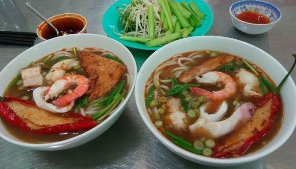
Đến với Cần Thơ, khi bạn muốn thưởng thức món bún mắm “thượng hạn” thì còn đợi gì nữa mà không nhanh chân ghé vào quán bún mắm Cô Ba tại địa chỉ số 182, đường Trần Phú, phường Cái Khế, quận Ninh Kiều, Thành Phố Cần Thơ, để được thưởng thức món bún mắm mạng đậm đà hương vị của người Việt Nam. Bún mắm Cô Ba đã không còn xa lạ gì với những người dân sinh sống tại Cần Thơ, và học sinh-sinh viên. Với giá cả bình dân từ 25.000đ/1 tô, 36.000đ/ 1 tô đặc biệt, lại vừa hợp khẩu vị với nhiều người, quán bún mắm Cô Ba luôn tấp nập khách vừa đến ăn tại chỗ, vừa mang về nhà.
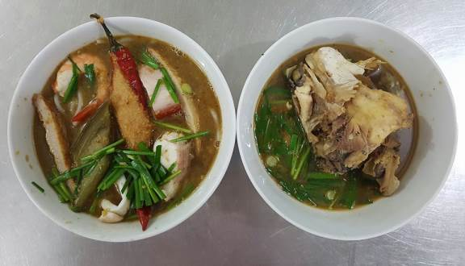
Với hương vị đặc trung từ đất nước Campuchia, nhưng lại được người địa phương ở Cần Thơ nấu với một hương vị mang đậm chất quê hương Việt Nam. Với nước dùng được nêm rất vừa ăn, hợp khẩu vị.Cũng như món bún mắm tại các quán khác nói chung và tại Cần Thơ nói riêng,thành phần của tô bún mắm gồm có đầu tiên phải kể đến là bún, tiếp đến là nước dùng được nấu mắm cá linh hoặc mắm cá lóc đậm đà mùi thơm đặc trưng, rau ăn kèm, vài miếng heo quay, cá lóc, mực, tôm, chả, và nếu muốn ăn phần đặc biệt thì có thể gọi thêm 1 trứng hột vịt lộn. Bạn có thể bỏ vào chanh, ớt hoặc them vào chút mắm tôm vào để cho tô bún mắm thêm đậm đà và ngon hơn tùy theo khẩu vị ăn của mỗi người.
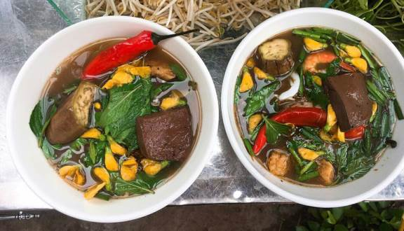
Đến với quán bún mắm Cô Ba, các tín đồ của bún mắm sẽ dễ dàng nhận ra hương vị đặc trưng của quán ăn này, và điều đặc biệt là một tô đặc biệt hoặc kêu thêm sẽ có 1 trái ớt kẹp vào miếng chả. Ăn vào và cảm nhận được vị cay nồng của ớt kèm theo mùi thơm của chả và nước dùng, nghe kể mà ai chả thèm.
Giờ mở cửa: 10:00-20:00
Giá:20.000đ – 36.000đ.
Địa chỉ:182 đường Trần Phú, phường Cái Khế, quận Ninh Kiều, Thành Phố Cần Thơ
Nước mía Mỹ Tho
Với thời tiết nắng nóng quanh năm, nước mía trở thành thức uống giải khát phổ biến. Bạn có thể thấy ở khắp các nẻo đường, từ những nhà với chiếc máy ép mía mini bán gọn một góc đến những chiếc xe nước mía rong ruổi trên mọi nẻo đường. Cái nắng chói chang gay gắt mà được thưởng thức một ly nước mía mát lành thì không còn gì tuyệt hơn.
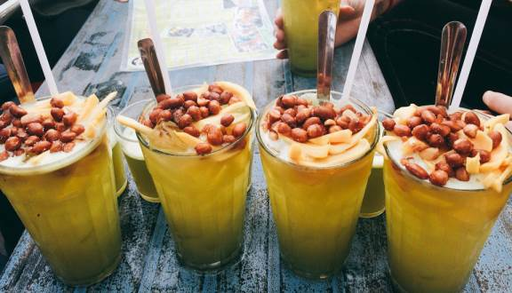
Nước mía được ép từ máy ép mía siêu sạch, đảm bảo vệ sinh, loại bỏ hết những bã mía, vụn mía. Cốt dừa có thể ép tự nhiên hoặc mua đóng gói sẵn. Đậu phộng rang chín, thêm chút muối vụn ở ngoài. Rau câu giòn giòn mix các vị, cắt hình đẹp mắt. Mít tươi xé nhỏ, thêm đá viên nhỏ nữa là thành ly nước mía Mỹ Tho. Uống vào bạn sẽ cảm nhận được cái vị thanh mát, ngậy mùi sầu riêng còn đọng lại nơi đầu lưỡi.
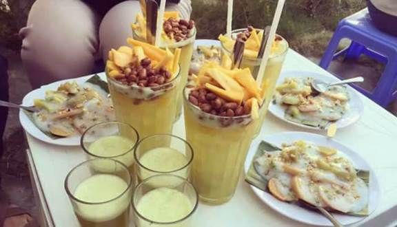
Với sự “ngon mắt” của nước mía Mỹ Tho, nhiều người sẽ nghĩ rằng giá của nó sẽ đắt. Thực chất, một ly như vậy giá trung bình chỉ 12.000 đồng, thậm chí có nơi bán chỉ 8.000 đồng. Bỏ vào trong một ly nước đẹp, kết hợp với không gian được trang trí độc đáo thì ly nước mía này khẳng định không thua một ly nước pha chế trong bất kỳ nhà hàng sang trọng nào.
Giờ mở cửa: 14:30 - 22:30
Giá: 10.000đ - 20.000đ.
Địa chỉ: 41 Mạc Thiên Tích, Quận Ninh Kiều, Thành Phố Cần Thơ
Bạch Nguyễn Phúc Thịnh
Các bài review của trang rất phong phú và nhiều cái mới mẻ, nếu như review món ăn mà chỉnh theo cách quay thì sẽ cảm thấy rất nhàm bởi vì hiện giờ việc tạo vlog review các món ăn rất là phổ biến, bởi cho nên review các món ăn bằng các bài viết rất là thú vị và độc đáo.
Trả lời
Nguyễn Sơn Hào
Lần đầu tôi tìm thấy trang web này là do một người bạn của tôi đã giới thiệu, mới đầu tôi cũng nghĩ "à !chắc cũng như mấy trang bình thường và cái sự lười biến của bản thân nên tôi nghĩ sẽ lười đọc hơn là xem video review của các vlog có tiếng. Nhưng tôi đã nghĩ khác sao khi thử vào xem nó như thế nào, các hình ảnh, bài viết của web làm tôi rất là hứng thú, tạo cảm giác thèm ăn cho tôi và giúp tôi siêng trong việc đọc các bài viết thay vì chỉ lười ngồi xem trên youtube.
Trả lời